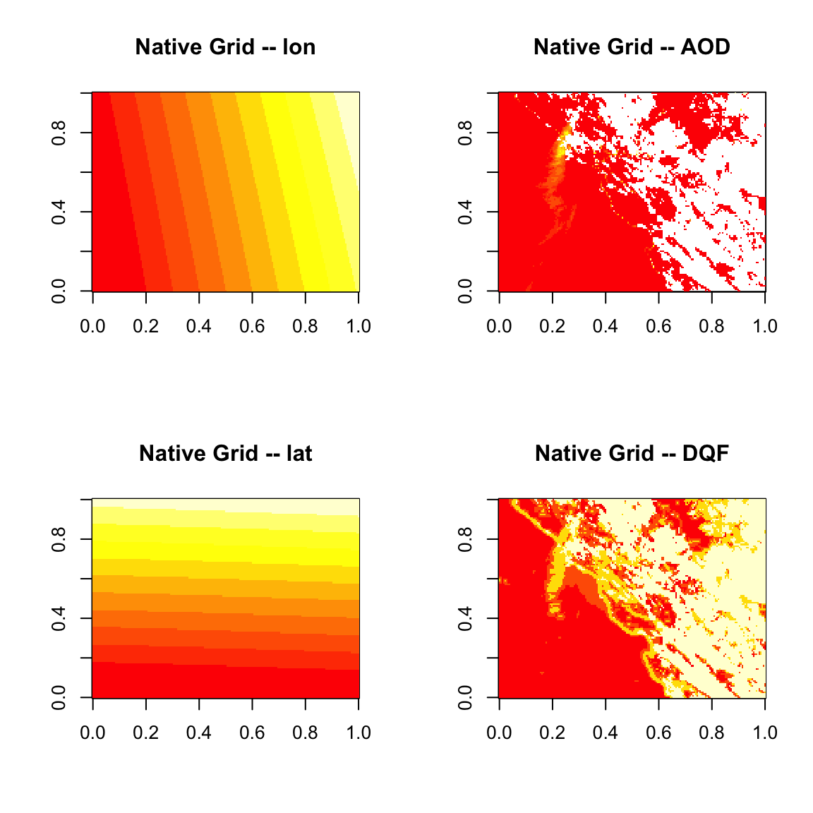
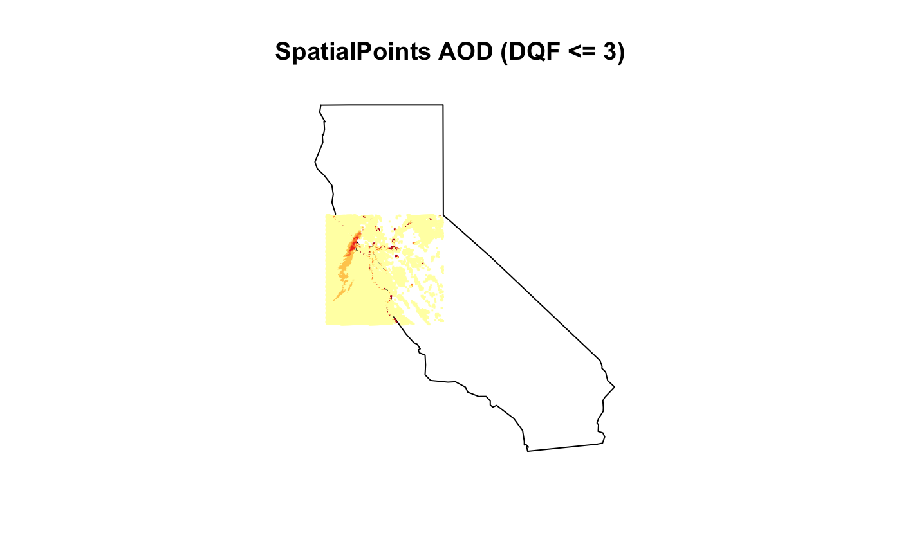
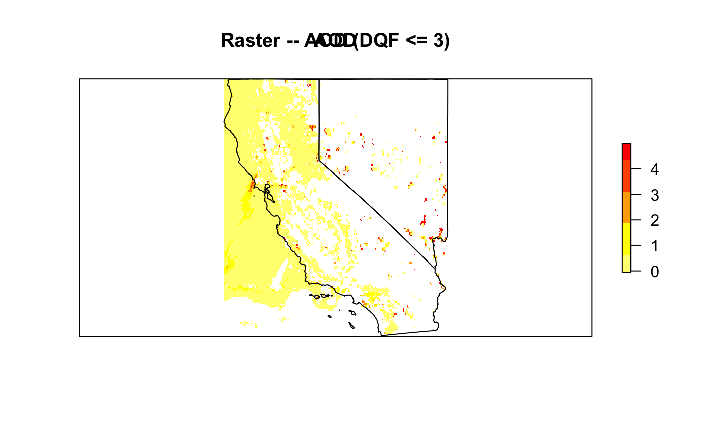
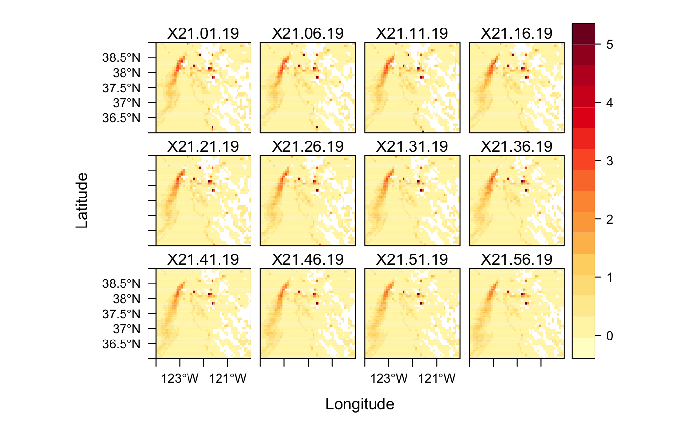

aod_data_structures.RmdThe MazamaSpatialUtils package utilizes several different data structures that represent different levels of processing of GOES AOD data. As stored in the NetCDF files, the AOD is on its “native” pixel grid, with x and y representing scan angles as opposed to longitude and latitude. Each image is a snapshot of the spherical earth and thus the grid is inherently curvilinear.
This raw, curvilinear data is processed into different data structures, step-by-step with the following functions:
createNativeGrid() – returns list of arrays with native pixel gridcreateTibble() – returns tibble with longitude, latitude, valuecreateSpatialPoints() – returns sp package SpatialPointsDataFrame
createRaster() – returns raster package raster
createRasterStack() – returns raster package rasterStack
Each successive data structure is described in the sections below.
Here we set things up with data from the 2019 Kincade fire in California:
library(MazamaSatelliteUtils)
setSatelliteDataDir("~/Data/Satellite")
goesaodc_downloadAOD(
satID = "G17",
datetime = "2019-10-27 14:00",
timezone = "America/Los_Angeles"
)
files <- goesaodc_listFiles("G17", "2019-10-27 14:00", timezone = "America/Los_Angeles")
ncList <- list()
for ( file in files ) {
label <-
file %>%
goesaodc_convertFilenameToDatetime() %>%
MazamaCoreUtils::timeStamp(unit = "sec", timezone = "UTC")
ncList[[label]] <- goesaodc_openFile(basename(file))
}At the lowest level, data are accessible on the native, curvilinear grid by using the goesaodc_nativGrid() function. This function finds the native grid cells which are bounded by the incoming bbox and returns a list of arrays named lon, lat, AOD and DQF. Individual elements can be viewd with graphics::image().
While GOES AODC CONUS images are commonly 3+ Megabytes, specification of bbox allows ingest of much smaller subsets with a minimal memory footprint.
Note that we have to reverse the j indices when using base::image().
# Using previously defined variables
kincade_bbox <- c(-124, -120, 36, 39)
nativeGrid <- goesaodc_createNativeGrid(ncList[[1]], kincade_bbox)
j_indices <- ncol(nativeGrid$lon):1
layout(matrix(1:4, nrow = 2))
image(nativeGrid$lon[, j_indices])
title("Native Grid -- lon")
image(nativeGrid$lat[, j_indices])
title("Native Grid -- lat")
image(nativeGrid$AOD[, j_indices])
title("Native Grid -- AOD")
image(nativeGrid$DQF[, j_indices])
title("Native Grid -- DQF")
Once the desired data have been ingested, the next step is to create a tibble (modern data.frame) where each record has the lon, lat, AOD, DQF associated with a single pixel. Internally, this data structure is used to subset data based on rectangular lat-lon boundaries.
This datas tructure and the nativeGrid list are primarily used internally and rarely of interest to an end user. The goesaodc_createTibble() calls `goesaodc_createNativeGrid() internally.
# Using previously defined variables
tibble <- goesaodc_createTibble(ncList[[1]], kincade_bbox)
head(tibble)## # A tibble: 6 x 4
## lon lat AOD DQF
## <dbl> <dbl> <dbl> <dbl>
## 1 -124. 39.0 0.0698 0
## 2 -124. 39.0 0.0469 0
## 3 -124. 39.0 0.0401 0
## 4 -124. 39.0 0.0466 0
## 5 -124. 39.0 0.0358 0
## 6 -124. 39.0 0.0483 0The first spatial data structure is created by goesaodc_createSpatialPoints() which calls goesaodc_createTibble() internally and uses the sp package to convert the tibble into a SpatialPointsDataFrame. This data structure is useful for creating maps showing pixels in their native grid position.
The goesaodc_plotSpatialPoints() function can plot the AOD values from this data structure as filtered by the requested dqfLevel.
# Using previously defined variables
SPDF <- goesaodc_createSpatialPoints(ncList[[1]], dqfLevel = 3, bbox = kincade_bbox)
maps::map(database = "state", "regions" = c("california"), xlim = c(-126, -113.5))
goesaodc_plotSpatialPoints(SPDF, cex = 0.2, add = TRUE)
title("SpatialPoints AOD (DQF <= 3)")
For basic plotting needs, the SpatialPointsDataFrame is the highest data structure needed. But the raster package has many advanced capabilities for image processing once data have been converted into a raster – a data structure with a rectilinear rather than a curvilinear structure in longitude-latitude space.
The goesaodc_createRaster() function takes care of loading the requested data and assigning data to a rectilinear grid determined by the res argument specifying degrees per grid cell. When multiple valid pixel values occur within a grid cell, the grid cell value is determined by applying the function specified with fun (averaging by default).
This function should be used when working with larger areas where some spatial averaging is desired. It is also possible to create rasters whose underlying grid matches that of a particular model run – allowing direct comparison.
# Using previously defined variables
ca_nv <- subset(USCensusStates, stateCode %in% c("CA","NV"))
ca_nv_bbox <- bbox(ca_nv)
rstr <- goesaodc_createRaster(
ncList[[1]],
res = 0.05,
fun = mean,
dqfLevel = 3,
bbox = ca_nv_bbox
)
raster::plot(rstr, "AOD", col = rev(heat.colors(5)), axes = FALSE)
plot(ca_nv, add = TRUE)
title("Raster -- AOD (DQF <= 3)")
At the highest level of data processing is the raster package rasterStack data structure which combines multiple raster objects, typically associated with individual time steps.
The rasterVis package provides convenient functions for creating data visualizations covering multiple timesteps as seen in the example below.
The goesaodc_createRasterStack() is currently an experimental function that does has not been fuly harmonized with other package functions. It will change in a future version of the package.
As currently implemented, the goesaodc_createRasterStack() does not take a vector of nc file handles. As currently implemented – this may change – the function is designed to accept information on the desired satellite, time range and area and takes care of finding and potentially downloading data files, opening NetCDF files, ingesting data and then properly closing the NetCDF files.
It is also possible to specify a vector of file names but the satID and datetime arguments must still be specified. Again, this may change in a future version
# Start by closing the nc file handles we opened at the beginning
for ( nc in ncList ) {
ncdf4::nc_close(nc)
}
# Using previously defined variables
rasterStack <- goesaodc_createRasterStack(
satID = "G17",
datetime = "2019-10-27 14:00",
endTime = "2019-10-27 15:00",
bbox = kincade_bbox,
dqfLevel = 3,
timezone = "America/Los_Angeles",
res = 0.075,
isJulian = FALSE,
fileList = files,
verbose = FALSE
)
rasterVis::levelplot(rasterStack, par.settings = rasterVis::YlOrRdTheme())
Best of luck working with AOD satellite data!